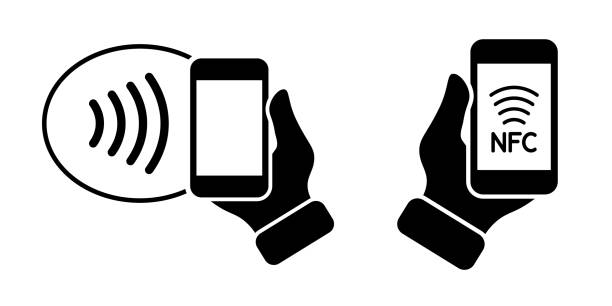

Near Field Communication technology
Applications and possibilities
Near Field Communication (NFC) is a short-range wireless technology that enables simple and secure communication between electronic devices.
NFC functions through electromagnetic induction between two loop antennas:
| Category | Examples |
|---|---|
| Payments | Apple Pay, Google Pay, Samsung Pay, Credit/Debit Cards |
| Access Control | Hotel key cards, Office badges, Transit cards |
| Gaming | Nintendo Amiibo, Skylanders, Disney Infinity |
| Smart Home | Device pairing, Automation triggers, Guest Wi-Fi access |
In 2023, over 60% of in-person transactions used contactless methods in developed markets.
NFC tags are small, passive devices containing:
They can be programmed to perform specific actions when scanned.
| Type | Memory | Speed | Common Uses |
|---|---|---|---|
| Type 1 | 96 bytes - 2KB | 106 Kbit/s | Simple tasks, URL sharing |
| Type 2 | 48 bytes - 2KB | 106 Kbit/s | Business cards, simple links |
| Type 3 (FeliCa) | Up to 1MB | 212 Kbit/s | Transit cards, payments |
| Type 4 | Up to 32KB | 424 Kbit/s | Access control, advanced applications |
| Type 5 (MIFARE) | Up to 8KB | Varies | Transit, access control |